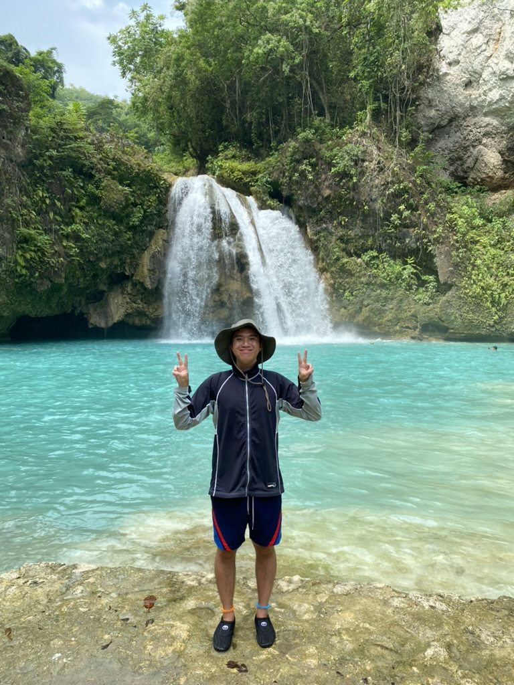

Traveled to Cebu, Philippines and behind me is Kawasan Falls.
Personal Background: I was born and raised in Chandler, Arizona for the first nine years. Then I moved to Charlotte, North Carolina when I was 10.
Professional Background: I’ve worked as a busser at Texas Roadhouse in high school.
Academic Background: I’m a sophomore studying Computer Science and my concentration is Information Technology.
Background in this Subject: I learned concepts of Python and Java because of 1212 and 1213 my freshman year of college but have no background experience in HTML and CSS.
Primary Computer Platform: Macbook Pro
Courses I'm Taking and Why:
ITIS 3135 - Web App Design and Development: Required for my major but I’m interested in learning HTML because this is a more practical and applicable class for CS.
ITCS 3160 - Database Design and Implementation: Required for my major but I’m interested to learn the introduction and basics of SQL.
STAT 1222 - Intro to Statistics: Required for my major and my first time taking a course dedicated to only statistics.
MUSC 1512 - Local Arts/Humanities: Music in U.S. Communities: Gen ed that I still need to complete.
PHYS 1101L - Introductory Physics I Lab: Gen ed that I still need to complete.
CTCM 2530 LEADS (RELS): Gen ed that I still need to complete that is part of an integrated First-Year Writing and Theme curriculum.
Funny/Interesting item about yourself: I used to have an obsession with Beyblades. I had two stadiums, a multitude of Beyblades, and even watched their TV shows.
I'd also like to Share: This past summer, it was my first time visiting and experiencing the city of Cebu, Philippines🇵🇭🇵🇭.